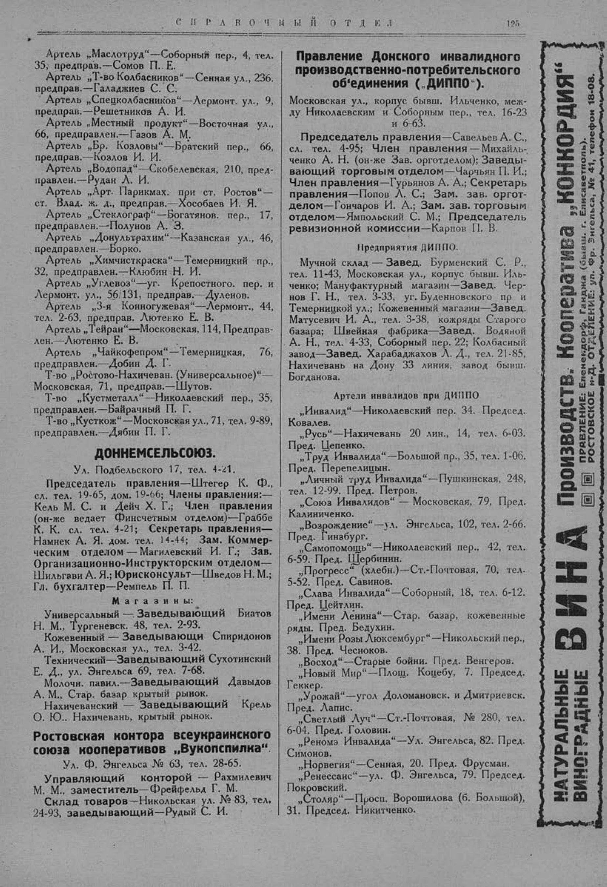

Лист источника 175
Скан

Распознанный текст
С П Р А В О Ч Н Ы Й О Т Д Е Л 125
Артель „Маслотруд“—Соборный пер., 4, тел.
35, предправ.—Сомов П. Е.
Артель „Т-во Колбасников“—Сенная ул., 236.
предправ.—Галаджиев С. С.
Артель „Спецколбасников“—Лермонт. ул., 9,
предправ.—Решетников А. И.
Артель „Местный продукт“—Восточная ул.,
66, предправлен.—Газов А. М.
Артель „Бр. Козловы“—Братский пер., 66,
предправ.—Козлов И. И.
Артель „Водопад“—Скобелевская, 210, пред-
правлен.—Рудан Л. И.
Артель „Арт. Парикмах. при ст. Ростов“—
ст. Влад. ж. д., предправ.—Хособаев И. Я.
Артель „Стеклограф“—Богатянов. пер., 17,
предправлен.—Полунов А. З.
Артель „Донультрахим“—Казанская ул., 46,
предправлен.—Борко.
Артель „Химчисткраска“—Темерницкий пр.,
32, предправлен.—Клюбин Н. И.
Артель „Углевоз“—уг. Крепостного. пер. и
Лермонт. ул., 56/131, предправ.—Дуленов.
Артель „3-я Конногужевая“—Лермонт., 44,
тел. 2-63, предправ. Лютенко Е. В.
Артель „Тейран“—Московская, 114, Предправ-
лен.—Лютенко Е. В.
Артель „Чайкофепром“—Темерницкая, 76,
предправлен.—Добин Д. Г.
Т-во „Ростово-Нахичеван. (Универсальное)“—
Московская, 71, предправ.—Шутов.
Т-во „Кустметалл“—Николаевский пер., 35,
предправлен.—Байрачный П. Г.
Т-во „Кусткож“—Московская ул., 71, тел. 9-89,
предправлен.—Дябин П. Г.
ДОННЕМСЕЛЬСОЮЗ.
Ул. Подбельского 17, тел. 4-21.
Председатель правления—Штегер К. Ф.,
сл. тел. 19-65, дом. 19-66; Члены правления:—
Кель М. С. и Дейч Х. Г.; Член правления
(он-же ведает Финсчетным отделом)—Граббе
К. К. сл. тел. 4-21; Секретарь правления—
Намнек А. Я. дом. тел. 14-44; Зам. Коммер-
ческим отделом — Магилевский И. Г.; Зав.
Организационно-Инструкторским отделом—
Шильгави А. Я.; Юрисконсульт—Шведов Н. М.;
Гл. бухгалтер—Ремпель П. П.
М а г а з и н ы:
Универсальный — Заведывающий Биатов
Н. М., Тургеневск. 48, тел. 2-93.
Кожевенный — Заведывающи Спиридонов
А. И., Московская ул., тел. 3-42.
Технический—Заведывающий Сухотинский
Е. Д., ул. Энгельса 69, тел. 7-68.
Молочн. павил.—Заведывающий Давыдов
А. М., Стар. базар крытый рынок.
Нахичеванский — Заведывающий Крель
О. Ю.. Нахичевань, крытый рынок.
Ростовская контора всеукраинского
союза кооперативов „Вукопспилка“.
Ул. Ф. Энгельса № 63, тел. 28-65.
Управляющий конторой — Рахмилевич
М. М., заместитель—Фрейфельд Г. М.
Склад товаров—Никольская ул. № 83, тел.
24-93, заведывающий—Рудый С. И.
Правление Донского инвалидного
производственно-потребительского
об'единения („ДИППО“).
Московская ул., корпус бывш. Ильченко, меж-
ду Николаевским и Соборным пер., тел. 16-23
и 6-63.
Председатель правления—Савельев А. С.,
сл. тел. 4-95; Член правления — Михайль-
ченко А. Н. (он-же Зав. орготделом); Заведы-
вающий торговым отделом—Чарчьян П. И.;
Член правления—Гурьянов А. А.; Секретарь
правления—Попов Л. С.; Зам. зав. оргот-
делом—Гончаров И. А.; Зам. зав. торговым
отделом—Ямпольский С. М.; Председатель
ревизионной комиссии—Карпов П. В.
Предприятия ДИППО.
Мучной склад — Завед. Бурменский С. Р.,
тел. 11-43, Московская ул., корпус бывш. Иль-
ченко; Мануфактурный магазин—Завед. Чер-
нов Г. Н., тел. 3-33, уг. Буденновского пр и
Темерницкой ул.; Кожевенный магазин—Завед.
Матусевич И. А., тел. 3-38, кожряды Старого
базара; Швейная фабрика—Завед. Водяной
А. Н., тел. 4-33, Соборный пер. 22; Колбасный
завод—Завед. Харабаджахов Л. Д., тел. 21-85,
Нахичевань на Дону 33 линия, завод бывш.
Богданова.
Артели инвалидов при ДИППО
„Инвалид“—Николаевский пер. 34. Председ.
Ковалев.
„Русь“—Нахичевань 20 лин., 14, тел. 6-03.
Пред. Цепенко.
„Труд Инвалида“—Большой пр., 35, тел. 1-06.
Пред. Перепелицын.
„Личный труд Инвалида“—Пушкинская, 248,
тел. 12-99. Пред. Петров.
„Союз Инвалидов“ — Московская, 79, Пред.
Калиниченко.
„Возрождение“—ул. Энгельса, 102, тел. 2-66.
Пред. Гинзбург.
„Самопомощь“—Николаевский пер., 42, тел.
6-59. Пред. Щербинин.
„Прогресс“ (хлебн.)—Ст.-Почтовая, 70, тел.
5-52. Пред. Савинов.
„Слава Инвалида“—Соборный, 18, тел. 6-12.
Пред. Цейтлин.
„Имени Ленина“—Стар. базар, кожевенные
ряды. Пред. Бедухин.
„Имени Розы Люксембург“—Никольский пер.,
38. Пред. Чесноков.
„Восход“—Старые бойни. Пред. Венгеров.
„Новый Мир“—Площ. Коцебу, 7. Председ.
Геккер.
„Урожай“—угол Доломановск. и Дмитриевск.
Пред. Лапис.
„Светлый Луч“—Ст.-Почтовая, № 280, тел.
6-04. Пред. Головин.
„Реномэ Инвалида“—Ул. Энгельса, 82. Пред.
Симонов.
„Норвегия“—Сенная, 20. Пред. Фрусман.
„Ренессанс“—ул. Ф. Энгельса, 79. Председ.
Покровский.
„Столяр“—Просп. Ворошилова (б. Большой),
31. Председ. Никитченко.
НАТУРАЛЬНЫЕ
ВИНОГРАДНЫЕ
ВИНА
Производств. Кооператива „Конкордия“
ПРАВЛЕНИЕ: Еленендорф, Ганджа (бывш. г. Елисаветполь).
РОСТОВСКОЕ н-Д. ОТДЕЛЕНИЕ: ул. Фр. Энгельса, № 41, телефон 18-08.